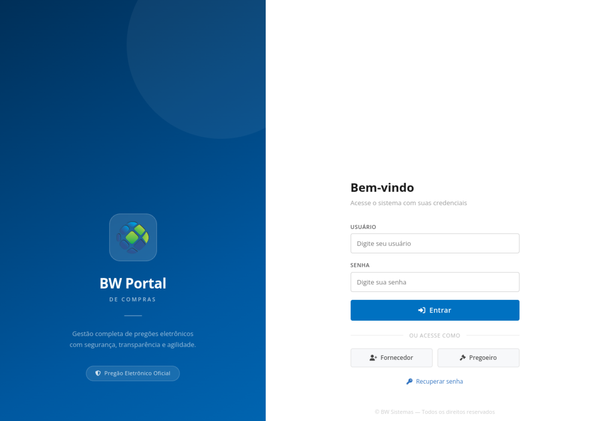

ESTUDO DE CASO · COMPRAS PÚBLICAS
BW Portal de Compras
Experiência profissional no desenvolvimento e na evolução de um portal de pregões eletrônicos.
Abrir sistema original ↗
CONTEXTO TÉCNICO
Etapas conectadas e eventos em tempo real
O estudo de caso documenta o fluxo de propostas, lotes, disputa eletrônica, habilitação e registro de resultados, além das tecnologias observadas no projeto profissional.
Sobre esta página
A imagem mostra apenas a tela de acesso pública. A aplicação real é separada deste repositório; o diagrama e as tecnologias estão descritos no README.
Ver arquitetura e decisões ↗Captura pública sem dados operacionais · Esta página não se conecta ao sistema